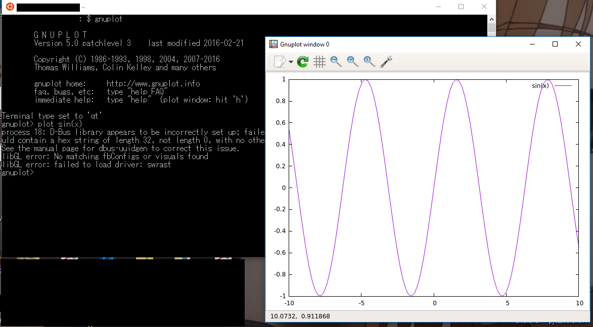

なんもわからんかった
AssetSelectorを選択したとき、フォントが崩れる問題を（一時的に）解消。 GLFWでは、複数のwindowでcontextをシェアするのはできるが、vaoはシェアされず、SelectorWindowで文字の長いものを表現しようとすると違うcontextでvaoを作ってしまい、エディタ上でundefined behaviorになってしまったということ。だから初期文字数を500くらいにした（そのうち直す）。
同じ理由で、AssetSelectorでアセットを選択したときにcallbackを読んでアセットを読み込むが、contextが違うとRenderTextureがうまく働かなくてmipmapが1以上のものが真っ黒になる。その結果、skyboxを表示しようとすると何も出てこなくて、skyboxのシェーダの誤作動かと思ってずーっと違うところデバッグしてた（ツライ）。
WindowsにX11を入れてbashでもGUI表示ができるようになった。とりまgnuplotで試した。
これでエンジンのポータブル性もOSを切り替えなくてもできる（かも）。